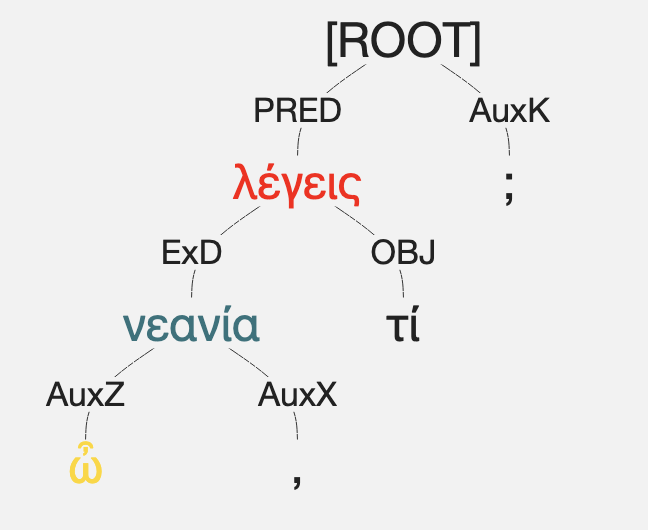
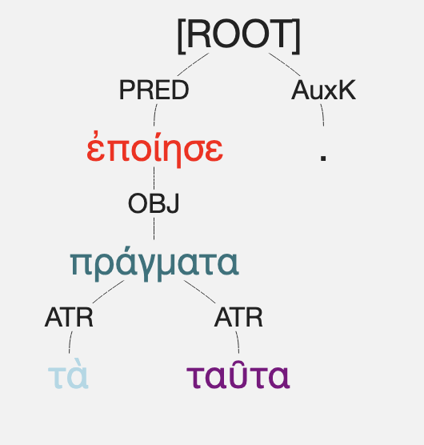
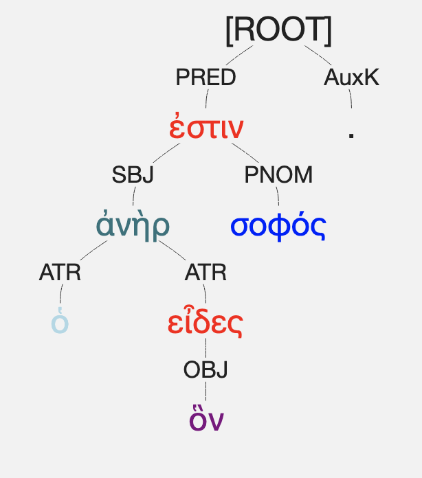

Revisão de Morfossintaxe e Tradução
Analise as sentenças e utilize o Treebank (AGDT) para visualizar a hierarquia sintática.
1ª Declinação (Masculino)
ὦ
νεανία
, τί λέγεις;
Visualizar Árvore Sintática (AGDT)
▼

Análise
-- Selecione --
Vocativo Singular
Nominativo Singular
Tradução
-- Selecione --
O jovem diz algo?
Ó jovem, o que dizes?
Verificar
3ª Declinação (Neutro)
ἐποίησε τὰ
πράγματα
ταῦτα.
Visualizar Árvore Sintática (AGDT)
▼

Análise
-- Selecione --
Acusativo Plural (Objeto)
Nominativo Plural
Tradução
-- Selecione --
Fez estas coisas/ações.
A ação foi feita.
Verificar
Pronome Relativo
ὁ ἀνὴρ
ὃν
εἶδες σοφός ἐστιν.
Visualizar Árvore Sintática (AGDT)
▼

Análise
-- Selecione --
Masc. Acusativo Singular
Masc. Nominativo Singular
Tradução
-- Selecione --
O homem que te viu é sábio.
O homem que viste é sábio.
Verificar